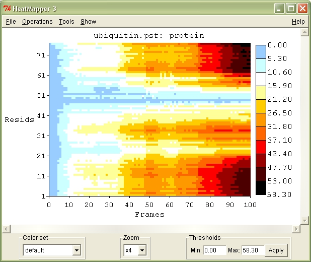

|
Heatmapper v1.0 :.: Description :.: Usage Instructions :.: Download and Install :.: About :.: DescriptionHeatmapper -plugin is an extension for VMD. Its main function is to plot 3D data as a heatmap graph, where color codings express graph point values. The Heatmapper plugin is intended to be used directly with the RMSD Visualizer Tool -plugin.  Usage InstructionsFile menu:Graphs can be stored and loaded using the File Menu commands. Clicking or draging the mouse on the graph prints out datapoint values into the VMD console. Note: Due to Tcl-language limitations only 'gif' image format is supported. Because of the same limitations, the exported gif images contain only the heatmap graph datapoints and not the axis, legend and text information that is only available in the postscript format. The best way to turn the graph into for example a jpg, bmp or png, is to simply take a screencapture of the visible graph using appropriate software. The most simple way to obtain a screencapture is to use the 'Print Screen'-button on the keyboard, which takes and places the screencapture on the clipboard. If the visible graph is too big to fit the screen (even on zoom level 'x1'), there is no simple way available (other than post script format) for exporting and saving the whole graph as an image. Operations:By using the commands of the Operations menu, another graph's data can be loaded into the same graph. This enables for example an easy way to confirm that two graphs are identical. For example, substracting an identical graph should yield a graph with only 0.00 values. To substract, add or multiply a graph, it must be first saved as a Heatmapper text file: File menu -> Save heatmap data as text. The Apply expression menu selection performs a calculation on each datapoint in the heatmap graph. In each datapoint calculation, every instance of the keyword "VALUE" in the expression is replaced by the value of the current datapoint. See Tcl 'expr' documentation for available mathematical functions. Note: Using graphs of different dimesions for any operation should be done very carefully. Tools:The Tool menu selection allows changing of the graph Zoom factor and the used color set. At zoom level '1x' every pixel on the screen represents a single datapoint, at zoom level 'x8' every datapoint represents a 8x8 pixel square on the screen. Show:The commands of the Show menu can be used to hide and show different elements of the heatmap graph. Using Heatmapper to visualize any data:Heatmapper can be lauched using Tcl scripts ("[heatmapper -loadfile filename]") to visualize any data that is in the correct format. Heatmapper reads in text files containing the data to be graphed. The format of the files can be easily understood by saving an example graph (as a .hm file) and examining the file in a text editor. Download and InstallDownload: Included with VMD 1.9.1. The Heatmapper plugin is intended for use with the RMSD Visualizer Tool plugin. Installation for earlier VMD versions: Copy folder heatmapper1.0 into the directory 'VMD/plugins/noarch/tcl/' and run the following commands in the VMD console:
vmd_install_extension rmsdvt rmsdvt_tk "Analysis/RMSD Visualizer" To load the plugins on VMD start up, insert the commands into the file 'vmd.rc' (Windows) or '.vmdrc' (Unix) in the VMD installation directory. About
Heatmapper v1.0 Authors: Anssi Nurminen, Sampo Kukkurainen, Laurie S. Kaguni, Vesa P. Hytönen Institute of Biomedical Technology University of Tampere, Tampere, Finland and BioMediTech, Tampere, Finland |